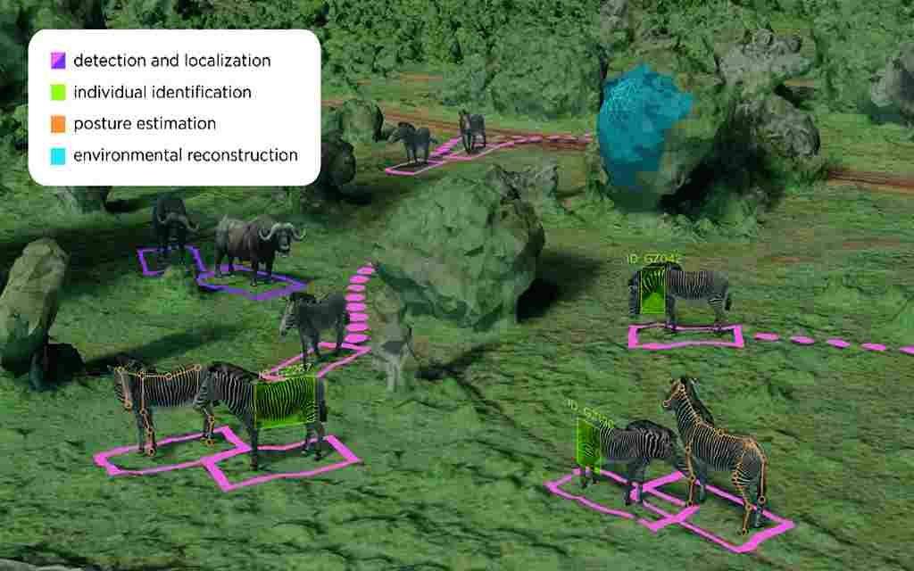
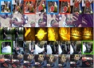

|
Summary: This line of work has been the first to apply visual deep learning to the task of automated individual bovine identification. Friesian cattle carry a unique black and white coat pattern. We have produced a highly accurate state-of-the-art recognition framework for this biometric entity in real-world farm environments. Methods such as metric learning and self-supervision can be utilised to improve performance and flexibility of application. Keywords: Sustainable Farming, Friesian Cattle, Metric Learning, Individual Identification, Coat Pattern Analysis, Self-Supervision, Long-term Recurrent Convolutional Networks Papers: Deep Metric Learning (CEA2021), Self-Supervision (CV4A2021), Autonomous Drones (IROS2019), LRCN Deep Learning (ICCVW2017), SIFT ID via RGB-D (ICIP2016) Thesis: Visual Biometric Processes for Collective Identification of Individual Friesian Cattle Datasets: Cows2021, OpenCows2020, AerialCattle2017, FriesianCattle2017, FriesianCattle2015 Code: Metric Learning for Friesian ID (GitHub), Self-Supervision for Friesian ID (GitHub) |
|
Summary: This project has delivered the first system to achieve autonomous aerial animal biometrics. We built a computationally-enhanced M100 UAV platform with an onboard deep learning inference system for integrated computer vision and navigation able to autonomously find and visually identify by coat pattern individual Holstein Friesian cattle in freely moving herds. It has been tested on a small herd in a real-world pasture setting and produced error-free identification. Our proof-of-concept system is a successful step towards autonomous biometric identification of individual animals from the air in open pasture environments for tag-less AI support in farming and ecology. Keywords: UAV Navigation, Autonomous Robotics, On-board Inference, Multi-Stream Architecture, Sustainable Farming, Friesian Cattle Summary Video: IROS 2019 Video Summary, IROS 2018 Video Summary Papers: Autonomous Drones (IROS2019), Dynamic Aerial Navigation (IROS2018), Deep Learning (ICCVW2017) Datasets: OpenCows2020, GTRF2018, AerialCattle2017 Code: Grid-based Target Recovery Framework (GTRF) |
 Summary: Automated monitoring of Great Apes from integrated camera trapping is a pillar for answering important research questions relating to their ecology and conservation. Gathering long-term data on the demographics, behaviours, group structure and social interactions are fundumental for understanding these charismatic creatures better. Here in Bristol we have built systems to detect Great Apes in challenging settings and individually identify them based on their facial features. We have also constructed the first systems that can automatically recognise great ape activities in video. Some facial recognition systems have been applied to thousands of camera trap videos in the wild. We are currently scaling up our work and build new international collaborations to further this line of work.
Summary: Automated monitoring of Great Apes from integrated camera trapping is a pillar for answering important research questions relating to their ecology and conservation. Gathering long-term data on the demographics, behaviours, group structure and social interactions are fundumental for understanding these charismatic creatures better. Here in Bristol we have built systems to detect Great Apes in challenging settings and individually identify them based on their facial features. We have also constructed the first systems that can automatically recognise great ape activities in video. Some facial recognition systems have been applied to thousands of camera trap videos in the wild. We are currently scaling up our work and build new international collaborations to further this line of work.Keywords: Behaviour Classification, Facial Recognition, Individual Identification, Dual-Stream Networks, Long-term Recurrent Convolutional Networks, Spatio-Temporal Analysis, Wildlife Conservation Papers: Deep Behaviour Recognition (VAIB2021), Deep Face Recognition for Zoos (VAIB2021), Deep Face Recognition in the Wild (ICCVW2017), Face Detection in CamTrap Data (AJP2017), Augmentation for Face Detection (BMVW2013) Datasets: BristolGorillas2020 Videos and Annotations, PanAfrican2020 Annotations, PanAfrican2019 Videos, PanAfrican2019 Annotations, Gorilla2017 Videos Code: Dual-Stream LRCN Behaviour Recognition (GitHub), YOLO-based Gorilla Face Recognition (GitHub) |
 Summary: Camera trap video data showing heavily occluded animals pose significant challenges to current computer vision methods. Yet, the analysis of biodiversity and animal population dynamics such as chimpanzees and gorillas around the globe often depends on such scenarios. We have started to address these problems using deep object detectors with techniques such as spatio-temporal feature blending which is a special form of attention-based learning. We have published our results along with all relevant key code sections.
Summary: Camera trap video data showing heavily occluded animals pose significant challenges to current computer vision methods. Yet, the analysis of biodiversity and animal population dynamics such as chimpanzees and gorillas around the globe often depends on such scenarios. We have started to address these problems using deep object detectors with techniques such as spatio-temporal feature blending which is a special form of attention-based learning. We have published our results along with all relevant key code sections.Keywords: Spatio-Temporal Feature Blending, Attention Model, ResNet-based Feature Pyramid Network Paper: Challenging Great Ape Detection in Video (ICCVW2019) Datasets: PanAfrican2019 Videos, PanAfrican2019 Annotations Code: SCM and TCM Deep Detection Components |
|
Summary: Tiny animal visuals (a few dozen pixels) captured by high-flying aerial drones are, despite advances in deep learning, a seriously challenging application for current AI detection methods. However, census operations in wildlife parks and conservation efforts often rely on exactly such data. Our line of work has for the first time combined deep super-resolution networks with contextual metadata such as drone altitude to animal detection in order to address the issue. Our systems are evaluated on large, publically available datasets including AED and SAVMAP containing African elephants and African mammals, respectively. Keywords: Super-Resolution, Altitude Data, Holistic Attention Network Paper: Aerial Animal Surveillance with Super-Resolution and Altitude Data (WACVW2022) |
|
Summary: Identifying a species based on appearance of the phenotype can be challenging (even for seasoned taxonomists) if visual features are very similar - as is the case in some planktic microfossils. We have started to apply deep metric learning for the first time to the problem of classifying these planktic foraminifer shells on microscopic images. This species recognition task is an important information source and scientific pillar for reconstructing past climates. All foraminifer CNN recognition pipelines in the literature produce black-box classifiers that lack visualisation options for human experts and cannot be applied to open set problems. We have benchmarked metric learning against these pipelines, have produced the first scientific visualisation of the phenotypic planktic foraminifer morphology space, and demonstrated that metric learning can be used to cluster species unseen during training. Metric learning proves highly effective for this domain and can serve as an important tool towards expert-in-the-loop automation of microfossil identification. Keywords: Deep Metric Learning, Clustering, Planktic Foraminifer, Active Learning Pre-print: Microfossil Identification via Deep Metric Learning |
|
Summary: Dorsal fins of Great Whites as seen in photographs have an individually characteristic outline shape. This poses a fine-grained, multi-instance classification problem for flexible, fairly textureless and possibly partly occluded objects. Our biometric approach was the first to operate fully automatically on shark fins. It utilises classical machine learning and computer vision to identify individual animals. We exploit techniques such as ultrametric contour maps, combinatorial spectral fingerprinting, LNBNN classification, and random forest fin space construction. B Hughes has built further on this work and created real-world animal ID applications for the SaveOurSeas Foundation and the Manta Trust. Keywords: Great White Sharks, Contour Recognition, Individual Identification, Pattern Matching, Segmentation Talks: BMVC 2015 Presentation of Early System, Shark and Ray Symposium 2015 Presentation of Early System Papers: Full FinSpace Prototype (IJCV2017), LNBNN-based System (BMVC2015), Fin Segmentation (BMVCW2015) Datasets: FinsScholl2456 |
|
Summary: X-ray micro–computed tomography is increasingly used to record the skeletal structure of corals. We are developing artificial intelligence approaches to assist the expert identification in small colonies of massive Porites spanning decades. For example, annual skeletal banding unlocks information about growth and calcification critical for an understanding of ecology and conservation questions. We recommend the development of a community platform to share annotated images for AI and have started to put this into practice. Keywords: Deep Learning, UNet Architectures, Segmentation, Coral Ecology Paper: Coral Skeletal Density-banding using Deep Learning (SNAS2022) Code: UNet-based Banding Recognition (GitHub) |
|

Summary: We are part of a growing international community of engineers and computer scientists who believe that deep learning approaches can be integrated into ecological workflows to improve inputs for conservation and behaviour research. Data acquisition in animal ecology is rapidly accelerating building on inexpensive and readily available sensor data. This holds great potential for large-scale environmental monitoring and understanding. This approach will require decades of work and further close collaboration as well as cross-disciplinary education between the computer science and animal ecology communities. We will need to train a new generation of data scientists who work in ecology, conservation, biodiversity and sustainability sectors. Everything starts with coming together to meet this challenge - join us! Keywords: International Community, Biodiversity, Sustainability, Conservation Papers: Seeing Biodiversity: Machine Learning for Conservation (2022), Computer Vision for Animal Biometrics (IETCV2018), Computer Science meets Ecology (DAGSTUHL2017), Animal Biometrics (TREE2013) |
|
Summary: This line of work has shown that the estimation of calorific expenditure from video and inertial sensors can be implemented reliably, even when applied in privacy-enhanced environments where RGB video is replaced with sihouette data only. We have experimented with classical machine learning and deep learning solutions, combining various input modalities from visual, depth, and inertial sensors. The work has been validated with a gold-standard gas exchange calorimeter, that is a portable metabolic measurement system of type COSMED K4b2. Keywords: Deep Learning, Calorific Expenditure Estimation, Motion Analysis, Inertial Sensors, RGB-D Papers: Inertial+Silhouette CalorieNet System (BMVC2018), Deep Learning (WACVW2018), Inertial+Visual System (IETCV2018), RGB-D Calorie Counter (LNCS2016) Datasets: SPHERE-Calorie Code: CalorieNet (GitHub) |
|
Summary: The identification of individuals from visual, distance, and inertial sensors is critical for enabling individualised services including health technology and assisted living settings. In these works we explored various deep learning techniques in order to re-identify individuals including more private settings where only silhouette and/or inertial data is available. Keywords: Deep Learning, Person Identification, Private Environments, Silhouette Data, Inertial Sensors, RGB-D Papers: Multi-Sensory Fusion in Real-World Settings (VISAPP2021), Silhoutte and Wearable Re-ID (SENSORS2021), Guided DC-GANs for Re-ID (ICIAP2019), Selective Augmentation for Re-ID (ICIAP2019) |
|
Summary: In the literature, meta-learning approaches have addressed few-shot problems by finding initialisations suited for fine-tuning to target tasks. Yet, often there are additional properties within training data (the context), not relevant to the target task, which can act as a distractor to meta-learning. We address this oversight by incorporating a context-adversarial component into the meta-learning process. This produces an initialisation which is both context-agnostic and task-generalised. We evaluate our approach on three commonly used meta-learning algorithms and four case studies including calorie estimation data. . Keywords: Meta-Learning, Context, Calorific Expenditure Estimation Paper: Context-Agnostic Meta-Learning (ACCV2021) Datasets: Website with Splits for Mini-ImageNet and CUB, SPHERE-Calorie |
|
Summary: Temporal-Relational CrossTransformers (TRX) observe relevant sub-sequences of all support videos, rather than class averages or single best matches. This approach achieved state-of-the-art results on few-shot splits of Kinetics, Something-Something V2 (SSv2), HMDB51, and UCF101 at publication. Importantly, the TRX method outperformed prior work on SSv2 by a wide margin (12%) due to the its ability to model temporal relations. Keywords: Transformers, Contrastive Learning, Pre-Training, Action Recognition Paper: Temporal-Relational Cross-Transformers (TRX) (CVPR2021) Code: Temporal-Relational CrossTransformers (GitHub) |
|
Summary: We show that learning video feature spaces in which temporal cycles are maximally predictable benefits action classification. In particular, we propose a novel learning approach termed Cycle Encoding Prediction (CEP) that is able to effectively represent high-level spatio-temporal structure of unlabelled video content. CEP builds a latent space wherein the concept of closed forward-backward as well as backward-forward temporal loops is approximately preserved. As a self-supervision signal, CEP leverages the bi-directional temporal coherence of the video stream and applies loss functions that encourage both temporal cycle closure as well as contrastive feature separation. We also show that using CEP as an add-on may improve the performance of existing architectures. Keywords: Deep Learning, Temporal Cycle Learning, Self-Supervision, Action Recognition Paper: CEP Self-Supervision (BMVC2021) Code: Cycle Encoding Prediction (GitHub) |
| T Karaderi, T Burghardt, AY Hsiang, J Ramaer, DN Schmidt. Visual Microfossil Identification via Deep Metric Learning. In Press. 3rd International Conference on Pattern Recognition and Artificial Intelligence (ICPRAI), Lecture Notes in Computer Science (LNCS), June 2022. (Arxiv PDF) |
 T Perrett, A Masullo, D Damen, T Burghardt, I Craddock, M Mirmehdi. Personalised Energy Expenditure Estimation: A Visual Sensing Approach With Deep Learning. In Press. JMIR Formative Research, 2022. T Perrett, A Masullo, D Damen, T Burghardt, I Craddock, M Mirmehdi. Personalised Energy Expenditure Estimation: A Visual Sensing Approach With Deep Learning. In Press. JMIR Formative Research, 2022. |
| J Gao, T Burghardt, NW Campbell. Label a Herd in Minutes: Individual Holstein-Friesian Cattle Identification. In Press. 21st International Conference on Image Analysis and Processing Workshop (ICIAPW) on Learning in Precision Livestock Farming (LPLF), Lecture Notes in Computer Science (LNCS), May 2022. (Arxiv PDF), (Dataset Cows2021) |
| O Brookes, SI Gray, P Bennett, KV Burgess, FE Clark, E Roberts, T Burghardt. Evaluating Cognitive Enrichment for Zoo-Housed Gorillas Using Facial Recognition. In Press. Frontiers in Veterinary Science, Animal Behavior and Welfare, 2022. (DOI:10.3389/fvets.2022.886720), (Frontiers Online), (GitHub), (Dataset BristolGorillas2020) |
| D Tuia, B Kellenberger, S Beery, BR Costelloe, S Zuffi, B Risse, A Mathis, MW Mathis, F van Langevelde, T Burghardt, R Kays, H Klinck, M Wikelski, ID Couzin, G van Horn, MC Crofoot, CV Stewart, T Berger-Wolf. Perspectives in Machine Learning for Wildlife Conservation. Nature Communications, Vol 13, Issue 1, No 792. February 2022. (DOI:10.1038/s41467-022-27980-y), (Arxiv PDF) |
| A Rutterford, L Bertini, EJ Hendy, KG Johnson, R Summerfield, T Burghardt. Towards the Analysis of Coral Skeletal Density-banding using Deep Learning. Springer Nature Applied Sciences, Vol 4, Issue 2, No 38, January 2022. (DOI:10.1007/s42452-021-04912-x), (Supplementary) |
 M Xue, T Greenslade, M Mirmehdi, T Burghardt. Small or Far Away? Exploiting Deep Super-Resolution and Altitude Data for Aerial Animal Surveillance. Real-World Surveillance: Applications and Challenges Workshop (RWS) at IEEE Winter Conference on Applications of Computer Vision (WACVW), pp. 509-519, January 2022. (CVF Version), (Arxiv PDF), (GitHub) M Xue, T Greenslade, M Mirmehdi, T Burghardt. Small or Far Away? Exploiting Deep Super-Resolution and Altitude Data for Aerial Animal Surveillance. Real-World Surveillance: Applications and Challenges Workshop (RWS) at IEEE Winter Conference on Applications of Computer Vision (WACVW), pp. 509-519, January 2022. (CVF Version), (Arxiv PDF), (GitHub) |
| X Yang, M Mirmehdi, T Burghardt. Back to the Future: Cycle Encoding Prediction for Self-supervised Contrastive Video Representation Learning. Proc. 32nd British Machine Vision Conference (BMVC), 399, BMVA Press, November 2021. (BMVA Version), (Arxiv PDF), (GitHub) |
|  T Perrett, A Masullo, T Burghardt, M Mirmehdi, D Damen. Temporal-Relational CrossTransformers for Few-Shot Action Recognition. Proc. 34th IEEE/CVF Conference on Computer Vision and Pattern Recognition (CVPR), pp. 475-484, June 2021. (CVF Version), (Arxiv PDF), (GitHub) |
| J Gao, T Burghardt, W Andrew, AW Dowsey, NW Campbell. Towards Self-Supervision for Video Identification of Individual Holstein-Friesian Cattle: The Cows2021 Dataset. 34th IEEE/CVF Conference on Computer Vision and Pattern Recognition Workshop on Computer Vision for Animal Behavior Tracking and Modeling (CV4Animals), June 2021. (Arxiv PDF), (GitHub), (Dataset Cows2021) |
| W Andrew, J Gao, S Mullan, N Campbell, AW Dowsey, T Burghardt. Visual Identification of Individual Holstein-Friesian Cattle via Deep Metric Learning. Computers and Electronics in Agriculture, Vol 185, June 2021. (DOI:10.1016/j.compag.2021.106133), (Arxiv PDF), (GitHub), (Dataset OpenCows2020) |
|
A Masullo, T Burghardt, D Damen, T Perrett, M Mirmehdi. No Need for a Lab: Towards Multi-Sensory Fusion for Ambient Assisted Living in Real-World Living Homes. 16th International Joint Conference on Computer Vision, Imaging and Computer Graphics Theory and Applications (VISAPP), February 2021. (DOI:10.5220/0010202903280337) |
| F Sakib, T Burghardt. Visual Recognition of Great Ape Behaviours in the Wild. Proc. 25th IEEE/IAPR International Conference on Pattern Recognition (ICPR) Workshop on Visual Observation and Analysis of Vertebrate And Insect Behavior (VAIB), January 2021. (Workshop Paper), (Dataset PanAfrican2019 Video), (Arxiv PDF), (GitHub), (Dataset PanAfrican2020) |
| O Brookes, T Burghardt. A Dataset and Application for Facial Recognition of Individual Gorillas in Zoo Environments. Proc. 25th IEEE/IAPR International Conference on Pattern Recognition (ICPR) Workshop on Visual Observation and Analysis of Vertebrate And Insect Behavior (VAIB), January 2021. (Workshop Paper), (Arxiv PDF), (GitHub), (Dataset BristolGorillas2020) |
| T Perrett, A Masullo, T Burghardt, M Mirmehdi, D Damen. Meta-Learning with Context-Agnostic Initialisations. 15th Asian Conference on Computer Vision (ACCV), Lecture Notes in Computer Science (LNCS), Vol 12625, pp. 70-86, November 2020. (DOI:10.1007/978-3-030-69538-5_5), (Arxiv PDF), (CVF Version), (GitHub) |
| A Masullo, T Burghardt, D Damen, T Perrett, M Mirmehdi. Person Re-ID by Fusion of Video Silhouettes and Wearable Signals for Home Monitoring Applications. Sensors, 20(9), 2576, May 2020. (DOI:10.3390/s20092576) |
| W Andrew, C Greatwood, T Burghardt. Aerial Animal Biometrics: Individual Friesian Cattle Recovery and Visual Identification via an Autonomous UAV with Onboard Deep Inference. 32nd IEEE/RSJ International Conference on Intelligent Robots and Systems (IROS), pp. 237-243, November 2019. (DOI:10.1109/IROS40897.2019.8968555), (Arxiv PDF), (CVF Extended Abstract at WACVW2020), (Video Summary) |
| A Masullo, T Burghardt, D Damen, T Perrett, M Mirmehdi. Who Goes There? Exploiting Silhouettes and Wearable Signals for Subject Identification in Multi-Person Environments. 2nd International Workshop on Computer Vision for Physiological Measurement (CVPM) at IEEE International Conference of Computer Vision (ICCVW), pp. 1599-1607, October 2019. (DOI:10.1109/ICCVW.2019.00199), (CVF Version), (Dataset SPHERE-Calorie) |
| X Yang, M Mirmehdi, T Burghardt. Great Ape Detection in Challenging Jungle Camera Trap Footage via Attention-Based Spatial and Temporal Feature Blending. Computer Vision for Wildlife Conservation (CVWC) Workshop at IEEE International Conference of Computer Vision (ICCVW), pp. 255-262, October 2019. (DOI:10.1109/ICCVW.2019.00034), (CVF Version), (Arxiv PDF), (Dataset PanAfrican2019 Video), (Dataset PanAfrican2019 Annotations and Code) |
| V Ponce-Lopez, T Burghardt, Y Sun, S Hannuna, D Damen, M Mirmehdi. Deep Compact Person Re-Identification with Distractor Synthesis via Guided DC-GANs. 20th International Conference on Image Analysis and Processing (ICIAP), pp. 488-498, September 2019. (DOI:10.1007/978-3-030-30642-7_44) |
| J Green, T Burghardt, E Oswald. Not a Free Lunch but a Cheap Lunch: Experimental Results for Training Many Neural Nets. IACR Cryptology ePrint Archive, paper 1068, September 2019. (ePrint PDF) |
| A Massulo, T Burghardt, T Perrett, D Damen, M Mirmehdi. Sit-to-Stand Analysis in the Wild using Silhouettes for Longitudinal Health Monitoring. 16th International Conference on Image Analysis and Recognition (ICIAR), pp. 175-185, August 2019.(DOI:10.1007/978-3-030-27272-2_15), (Arxiv PDF) |
| R Smith, T Burghardt. DeepKey: Towards End-to-End Physical Key Replication From a Single Photograph. 40th German Conference on Pattern Recognition (GCPR), pp. 487-502, October 2018. (DOI:10.1007/978-3-030-12939-2_34), (Arxiv PDF) |
| W Andrew, C Greatwood, T Burghardt. Deep Learning for Exploration and Recovery of Uncharted and Dynamic Targets from UAV-like Vision. 31st IEEE/RSJ International Conference on Intelligent Robots and Systems (IROS), pp. 1124-1131, October 2018. (DOI:10.1109/IROS.2018.8593751), (IEEE Version), (Dataset GTRF2018), (Video Summary) |
| A Massulo, T Burghardt, D Damen, S Hannuna, V Ponce-Lopez, M Mirmehdi. CaloriNet: From Silhouettes to Calorie Estimation in Private Environments. 29th British Machine Vision Conference (BMVC), 108, BMVA Press, September 2018. (BMVA Version), (Arxiv PDF), (Dataset SPHERE-Calorie), (GitHub) |
| V Ponce-Lopez, T Burghardt, S Hannuna, D Damen, A Masullo, M Mirmehdi. Semantically Selective Augmentation for Deep Compact Person Re-Identification. Person in Context (PIC) Workshop at European Conference of Computer Vision (ECCVW), pp. 551-561, September 2018. (DOI:10.1007/978-3-030-11012-3_41), (CVF Version), (Arxiv PDF) |
|
A Elsts, T Burghardt, D Byrne, D Damen, X Fafoutis, S Hannuna, V Ponce-Lopez, A Masullo, M Mirmehdi, G Oikonomou, R Piechocki, E Tonkin, A Vafeas, P Woznowski, I Craddock. A Guide to the SPHERE 100 Homes Study Dataset. Technical Report, May 2018. (Arxiv PDF), (Sensor Overview) |
| B Wang, L Tao, T Burghardt, M Mirmehdi. Calorific Expenditure Estimation using Deep Convolutional Network Features. Computer Vision for Active and Assisted Living Workshop (CV-AAL) at IEEE Winter Conference on Applications of Computer Vision (WACVW), March 2018. (DOI:10.1109/WACVW.2018.00014), (Dataset SPHERE-Calorie) |
| T Burghardt, RB Fisher, S Ravela (editors). Computer Vision for Animal Biometrics. IET Computer Vision - Special Issue, Vol 12, Issue 2, pp.119-120, March 2018. (DOI:10.1049/iet-cvi.2018.0019), (IET Online Version), (Editorial PDF) |
| L Tao, T Burghardt, M Mirmehdi, D Damen, A Cooper, M Camplani, S Hannuna, A Paiment, I Craddock. Energy Expenditure Estimation using Visual and Inertial Sensors. IET Computer Vision, Special Section: Computer Vision in Healthcare and Assisted Living, Vol 12, Issue 1, pp. 36-47, February 2018. (DOI:10.1049/iet-cvi.2017.0112), (Dataset SPHERE-Calorie) |
| CA Brust, T Burghardt, M Groenenberg, C Kaeding, HS Kuehl, M Manguette, J Denzler. Towards Automated Visual Monitoring of Individual Gorillas in the Wild. Visual Wildlife Monitoring (VWM) Workshop at IEEE International Conference of Computer Vision (ICCVW), pp. 2820-2830, October 2017. (DOI:10.1109/ICCVW.2017.333), (Dataset Gorilla2017), (CVF Version) |
| W Andrew, C Greatwood, T Burghardt. Visual Localisation and Individual Identification of Holstein Friesian Cattle via Deep Learning. Visual Wildlife Monitoring (VWM) Workshop at IEEE International Conference of Computer Vision (ICCVW), pp. 2850-2859, October 2017. (DOI:10.1109/ICCVW.2017.336), (Dataset FriesianCattle2017), (Dataset AerialCattle2017), (CVF Version) |
| G Camps-Valls, T Hickler, B Koenig-Ries (editors). Computer Science meets Ecology (Dagstuhl Seminar 17091). In: Dagstuhl Reports, Vol 7, No 2, pp. 109-134, Leibniz-Zentrum fuer Informatik, September 2017. (DOI:10.4230/DagRep.7.2.109) |
| M Camplani, A Paiment, M Mirmehdi, D Damen, S Hannuna, T Burghardt, L Tao. Multiple Human Tracking in RGB-D Data: A Survey. IET Computer Vision. Vol 11, No 4, pp. 265-285, ISSN: 1751-9632. June 2017. (DOI:10.1049/iet-cvi.2016.0178) |
| B Hughes, T Burghardt. Automated Visual Fin Identification of Individual Great White Sharks. International Journal of Computer Vision (IJCV), Vol 122, No 3, pp. 542-557, May 2017. (DOI:10.1007/s11263-016-0961-y), (Dataset FinsScholl2456) |
| AS Crunchant, M Egerer, A Loos, T Burghardt, K Zuberbuehler, K Corogenes, V Leinert, L Kulik, HS Kuehl. Automated Face Detection for Occurrence and Occupancy Estimation in Chimpanzees. American Journal of Primatology. Vol 79, Issue 3, ISSN: 1098-2345. March 2017. (DOI 10.1002/ajp.22627) |
|
PR Woznowski, A Burrows, T Diethe, X Fafoutis, J Hall, S Hannuna, M Camplani, N Twomey, M Kozlowski, B Tan, N Zhu, A Elsts, A Vafeas, A Paiement, L Tao, M Mirmehdi, T Burghardt, D Damen, P Flach, R Piechocki, I Craddock, G Oikonomou. SPHERE: A Sensor Platform for Healthcare in a Residential Environment. Designing, Developing, and Facilitating Smart Cities: Urban Design to IoT Solutions. (V Angelakis, E Tragos, HC Poehls, A Kapovits, A Bassi (eds.)), Springer, pp. 315-333, January 2017. (DOI:10.1007/978-3-319-44924-1_14) |
| L Tao, T Burghardt, M Mirmehdi, D Damen, A Cooper, M Camplani, S Hannuna, A Paiment, I Craddock. Calorie Counter: RGB-Depth Visual Estimation of Energy Expenditure at Home. Lecture Notes in Computer Science (LNCS), Vol 10116, pp. 239-251, November 2016. (DOI:10.1007/978-3-319-54407-6), (Dataset SPHERE-Calorie) |
| S Hannuna, M Camplani, J Hall, M Mirmehdi, D Damen, T Burghardt, A Paiment, L Tao. DS-KCF: A real-time tracker for RGB-D data. Journal of Real-Time Image Processing, Vol 16, No 5, pp. 1439-1458, November 2016. (DOI 10.1007/s11554-016-0654-3), (Rotational Dataset), (Code Download) |
|
J Hall, M Camplani, S Hannuna, M Mirmehdi, L Tao, D Damen, T Burghardt, A Paiment. Designing a Video Monitoring System for AAL applications: The SPHERE Case Study. IET International Conference on Technologies for Active and Assisted Living (TechAAL). October 2016. (DOI:10.1049/ic.2016.0061) |
|
L Tao, T Burghardt, M Mirmehdi, D Damen, A Cooper, M Camplani, S Hannuna, A Paiment, I Craddock. Real-time Estimation of Physical Activity Intensity for Daily Living. IET International Conference on Technologies for Active and Assisted Living (TechAAL). October 2016. (DOI:10.1049/ic.2016.0060) |
| W Andrew, S Hannuna, N Campbell, T Burghardt. Automatic Individual Holstein Friesian Cattle Identification via Selective Local Coat Pattern Matching in RGB-D Imagery. IEEE International Conference on Image Processing (ICIP), pp. 484-488, ISBN: 978-1-4673-9961-6, September 2016. (DOI:10.1109/ICIP.2016.7532404), (Dataset FriesianCattle2015) |
|
L Tao, A Paiment, D Damen, M Mirmehdi, S Hannuna, M Camplani, T Burghardt, I Craddock. A Comparative Study of Pose Representation and Dynamics Modelling for Online Motion Quality Assessment. Computer Vision and Image Understanding, Vol 148, pp. 136-152, Elsevier, May 2016. (DOI:10.1016/j.cviu.2015.11.016) |
| L Tao, T Burghardt, S Hannuna, M Camplani, A Paiement, D Damen, M Mirmehdi, I Craddock. A Comparative Home Activity Monitoring Study using Visual and Inertial Sensors. IEEE 17th International Conference on eHealth Networking, Applications and Services. pp. 644-647, October 2015. (DOI:10.1109/HealthCom.2015.7454583), (Dataset SPHERE_H130) |
| D Gibson, T Burghardt, N Campbell, N Canagarajah. Towards Automating Visual In-Situ Monitoring of Crops Health. IEEE International Conference on Image Processing (ICIP), pp. 3906 - 3910, September 2015. (DOI:10.1109/ICIP.2015.7351537) |
| B Hughes, T Burghardt. Automated Identification of Individual Great White Sharks from Unrestricted Fin Imagery. 26th British Machine Vision Conference (BMVC), pp. 92.1-92.14, ISBN 1-901725-53-7, BMVA Press, September 2015. (DOI:10.5244/C.29.92), (Dataset FinsScholl2456) |
| M Camplani, S Hannuna, D Damen, M Mirmehdi, A Paiement, T Burghardt, L Tao. Robust Real-time RGB-D Tracking with Depth Scaling Kernelised Correlation Filters. 26th British Machine Vision Conference (BMVC), pp. 145.1-145.11, ISBN 1-901725-53-7, BMVA Press, September 2015. (DOI:10.5244/C.29.145), (Code) |
| B Hughes, T Burghardt. Affinity Matting for Pixel-accurate Fin Shape Recovery from Great White Shark Imagery. Machine Vision of Animals and their Behaviour (MVAB), Workshop at BMVC, pp. 8.1-8.8. BMVA Press, September 2015. (DOI:10.5244/CW.29.MVAB.8), (Dataset FinsScholl2456) |
| T Burghardt, D Damen, W Mayol-Cuevas, M Mirmehdi (editors). Correspondence, Matching and Recognition. International Journal of Computer Vision (IJCV), Vol 113, Issue 3, pp. 161-162, ISSN 0920-5691, Springer, June 2015. (DOI:10.1007/s11263-015-0827-8) |
|
P Woznowski, F Fafoutis, T Song, S Hannuna, M Camplani, L Tao, A Paiement, E Mellios, M Haghighi, N Zhu, G Hilton, D Damen, T Burghardt, M Mirmehdi, R Piechocki, D Kaleshi, I Craddock. A Multi-modal Sensor Infrastructure for Healthcare in Residential Environment. IEEE ICC Workshop on ICT-enabled Services and Technologies for eHealth and Ambient Assisted Living (ICCW), pp. 271-277, June 2015. (DOI:10.1109/ICCW.2015.7247190) |
| L Palmer, T Burghardt. Contextual Saliency for Nonrigid Landmark Registration and Recognition of Natural Patterns. International Conference on Computer Vision Theory and Applications (VISAPP), pp. 403-410, ISBN: 978-989-758-089-5, March 2015. (DOI:10.5220/0005268604030410) |
| HS Kuehl, T Burghardt. Fractal Representation and Recognition for Animal Biometrics: A Reply to Jovani et al. Trends in Ecology and Evolution, Vol 28, No 9, pp. 500-501, September 2013. (DOI:10.1016/j.tree.2013.06.007) |
| T Burghardt, D Damen, W Mayol-Cuevas, M Mirmehdi (editors). Proceedings of the 24th British Machine Vision Conference, BMVC2013. British Machine Vision Association (BMVA), ISBN 1-901725-49-9, BMVA Press. September 2013. |
| RC Sandwell, A Loos, T Burghardt. Synthesising Unseen Image Conditions to Enhance Classification Accuracy for Sparse Datasets: Applied to Chimpanzee Face Recognition. British Machine Vision Workshop (BMVW), BMVA Press, September 2013. (BMVW: ISBN 1-901725-50-2) |
 HS Kuehl, T Burghardt. Animal Biometrics: Quantifying and Detecting Phenotypic Appearance. Trends in Ecology and Evolution, Vol 28, No 7, pp. 432-441, July 2013. HS Kuehl, T Burghardt. Animal Biometrics: Quantifying and Detecting Phenotypic Appearance. Trends in Ecology and Evolution, Vol 28, No 7, pp. 432-441, July 2013.(DOI:10.1016/j.tree.2013.02.013) |